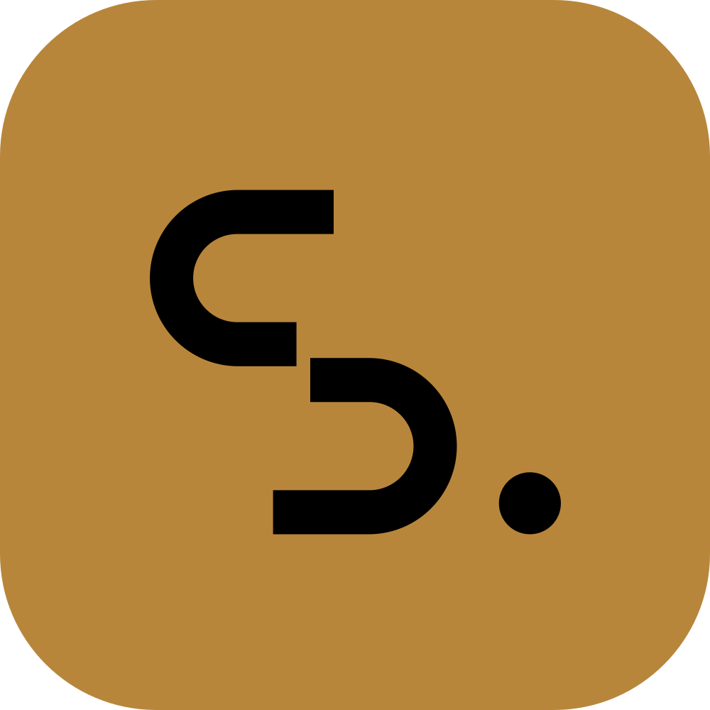

Logo variations & colour versions.
Seven colourways of every variant, each with the background it belongs on. The three points take gold — or the ink of a single-colour version. The pairing is a rule, not a preference.
- 7.1The seven colourways
- 7.2Pairing matrix and the tiles
Seven inks, each on its own ground.
Every variant 1–9 exists in all seven. File suffix --<colour> in 02_LOGO_SYSTEM/SVG and the convenience sets Full_Color / Black / White / Grayscale / Single_Color.
Dark on dark, light on light.
Brand kit rule 2. The tiles carry their own background and are used as delivered: dark by default, light for light interfaces, gold only where a single gold object is wanted.
| Background | Use | Never |
|---|---|---|
| Gallery Black · Night · Charcoal · dark photography (≥ 80 % black under the logo) | full-colour-dark (or white; grayscale-inverted for mono) | full-colour-light, black, grayscale |
| Plaster · Paper · Stone · white | full-colour-light (or black; grayscale for mono) | full-colour-dark, white, grayscale-inverted |
| Old Gold tile | black symbol or wordmark only | any full-colour version, white, gold |
| Single-ink print, engraving, stamps | black or single-colour-gold | grayscale (tints do not engrave) |
| Photography | full-colour-dark on the veil (≥ 80 % black) or white | any logo on busy or light imagery; never on gold or on gradients other than dusk / lamp |
The ring around the Z point is cut out, not drawn: in every colourway it shows the ground behind the logo — on photography or colour it is never filled with the letter colour or a background. Hairlines next to the logo are white at 10 % on dark and Soot at 10 % on light. Nothing else sits inside the clear space (chapter 08).
